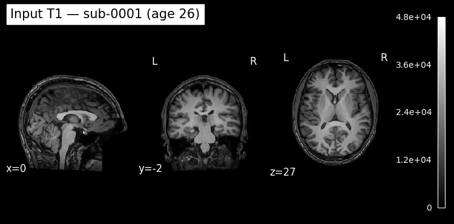
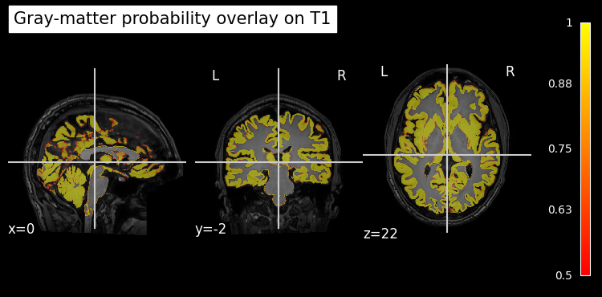

Brain Age Prediction with brainageR#
Author: Monika Doerig
Date: 19 May 2026
License:
Note: This notebook uses neuroimaging tools from Neurocontainers; those tools retain their original licenses. Please see Neurodesk citation guidelines for details.
Use of AI: This notebook was generated with assistance from Anthropic’s Claude (via Claude Code) across several iterations and then revised by the author. The author reviewed the final content and takes responsibility for it.
Citation and Resources#
Tools included in this workflow#
brainageR
Per the brainageR maintainer, there is no single primary journal article for the software; instead, we cite the works that have used it:
Clausen, A. N., Fercho, K. A., Monsour, M., Disner, S., Salminen, L., Haswell, C. C., … Morey, R. A. (2022). Assessment of brain age in posttraumatic stress disorder: Findings from the ENIGMA PTSD and brain age working groups. Brain and Behavior, 12(1), e2413. https://doi.org/10.1002/brb3.2413
Hobday, H., Cole, J. H., Stanyard, R. A., Daws, R. E., Giampietro, V., O’Daly, O., … Váša, F. (2022). Tissue volume estimation and age prediction using rapid structural brain scans. Scientific Reports, 12(1), 12005. https://doi.org/10.1038/s41598-022-14904-5
Biondo, F., Jewell, A., Pritchard, M., Aarsland, D., Steves, C. J., Mueller, C., & Cole, J. H. (2022). Brain-age is associated with progression to dementia in memory clinic patients. NeuroImage: Clinical, 36, 103175. https://doi.org/10.1016/j.nicl.2022.103175
Software:
James Cole. (2019). james-cole/brainageR: brainageR v2.1 (2.1). Zenodo. https://doi.org/10.5281/zenodo.3476365
Source code: james-cole/brainageR
R / kernlab (does most of the heavy lifting — Gaussian Process regression)
Karatzoglou, A., Smola, A., Hornik, K., & Zeileis, A. (2004). kernlab — An S4 Package for Kernel Methods in R. Journal of Statistical Software, 11(9). https://doi.org/10.18637/jss.v011.i09 (see also CRAN citation page).
SPM12 (used internally for segmentation and DARTEL normalisation)
Friston, K. J., et al. (2007). Statistical Parametric Mapping: The Analysis of Functional Brain Images. Elsevier / Academic Press. Online book
Dataset#
Snoek, L., van der Miesen, M. M., Beemsterboer, T., van der Leij, A., Eigenhuis, A., & Steven Scholte, H. (2021). The Amsterdam Open MRI Collection, a set of multimodal MRI datasets for individual difference analyses. Scientific Data, 8(1), 85. https://doi.org/10.1038/s41597-021-00870-6 — AOMIC PIOP2 (OpenNeuro
ds002790), CC0 license.
1. What is brain age?#
Healthy brains change with age in fairly predictable ways — gray-matter volume shrinks, ventricles enlarge, white-matter signal shifts. A machine-learning model trained on many healthy MRIs can guess a person’s age from a single T1 scan, purely based on these structural patterns.
The interesting quantity is not the guess itself, but the brain-age gap:
Gap ≈ 0 → brain looks typical for the person’s real age.
Gap > 0 → “older-looking” brain. In research cohorts, positive gaps have been associated with dementia risk, cardiovascular disease, and earlier mortality.
Gap < 0 → “younger-looking” brain.
How brainageR works under the hood#
SPM12 segments the T1 into gray matter, white matter, and CSF probability maps, and normalises them to MNI space using DARTEL (a diffeomorphic registration algorithm built into SPM12).
PCA reduces the dimensionality of the concatenated tissue-map features.
A Gaussian Process regression model — trained on 3,377 healthy adults (kernlab package in R) — predicts age from the PCA components. Reported test performance: r = 0.97 with chronological age, mean absolute error ≈ 3.9 years.
Important
Why use a model with ~3.9 year MAE as a biomarker? Brain-age research generally focuses not on the absolute predicted age, but on the distribution of residuals (predicted − chronological) across groups. In healthy training data those residuals are approximately mean-zero noise. Some published studies have reported that residuals shift systematically when
the model is applied to other cohorts — for example, Biondo et al. (2022) report that each additional year of brain-age gap was associated with a ~3% increased risk of progression to dementia in memory clinic patients (HR 1.03, 95% CI [1.02, 1.04]). The magnitude and direction of any shift varies between studies and depends on the model version, training distribution, and scanner/sequence used, so brain-age findings are typically interpreted as population-level effects, not per-subject diagnostic information.
What we’ll do in this notebook#
We’ll run brainageR on a real BIDS-formatted T1 from the AOMIC PIOP2 open dataset (OpenNeuro ds002790). The dataset documents each participant’s chronological age in participants.tsv, so we can compute a meaningful brain-age gap. These are the steps:
Load the
brainager/2.1.0module and inspect its CLI.Pull one healthy subject’s T1 from AOMIC PIOP2 via DataLad, and read their chronological age from
participants.tsv.Run the full brainageR pipeline (segment + predict) in one command.
Compute the brain-age gap (predicted − chronological) and interpret it against the model’s documented MAE.
Visually QC the tissue segmentation.
2. Load software and import python libraries#
We pin brainager/2.1.0 explicitly so the notebook is reproducible. This single module brings SPM12, R, and the brainageR scripts on PATH.
import module
await module.load('brainager/2.1.0')
await module.list()
['brainager/2.1.0']
nilearn, nibabel, and pandas — used below for visualisation, NIfTI I/O, and reading the participants TSV are not in the Neurodesk base image, so we install them here.
%%capture
!pip install nilearn==0.13.1 nibabel==5.4.2 pandas==2.3.3
import subprocess
from pathlib import Path
import nibabel as nib
import numpy as np
import pandas as pd
import matplotlib.pyplot as plt
from nilearn import plotting
3. Discover the tool’s interface#
Before running any unfamiliar tool, look at its --help. brainageR ships two scripts:
brainager_segment.py— the main entry point. Despite the name, it runs both segmentation and prediction.predict_age.py— the prediction-only step. Called internally bybrainager_segment.py.
!brainager_segment.py --help
usage: brainager_segment.py [-h] [--delete-temp] t1 [outdir]
BrainageR segmentation + prediction wrapper
positional arguments:
t1 Input T1 image (.nii or .nii.gz)
outdir Output directory (default: script dir)
optional arguments:
-h, --help show this help message and exit
--delete-temp Delete temporary folder (default: keep)
! predict_age.py --help
usage: predict_age.py [-h] [--subjname SUBJNAME] tempdir
Run brainageR prediction on segmented images
positional arguments:
tempdir Sandbox directory with smwc* files
optional arguments:
-h, --help show this help message and exit
--subjname SUBJNAME Postfix for smwc1/2/3 images (default: T1w.nii)
4. Data preparation — fetch one AOMIC PIOP2 subject#
AOMIC PIOP2 (Snoek et al. 2021) is a CC0-licensed dataset of 98 healthy young adults scanned on a 3T Philips Achieva — well within brainageR’s training distribution. We DataLad-install the dataset and fetch a single subject’s T1w.
We then read the dataset’s participants.tsv to get that subject’s chronological age, which we’ll need for computing the brain-age gap.
# Working directory for this run.
workdir = Path('brainageR')
workdir.mkdir(exist_ok=True)
print('Output workdir:', workdir.resolve())
Output workdir: /home/jovyan/workspace/books/examples/structural_imaging/brainageR
%%bash
cd brainageR
[ -d ds002790 ] || datalad install https://github.com/OpenNeuroDatasets/ds002790.git
cd ds002790
datalad get participants.tsv sub-0001/anat/sub-0001_T1w.nii.gz
ls -lh sub-0001/anat/*_T1w.nii.gz participants.tsv
install(ok): /home/jovyan/workspace/books/examples/structural_imaging/brainageR/ds002790 (dataset)
get(ok): sub-0001/anat/sub-0001_T1w.nii.gz (file) [from s3-PUBLIC...]
action summary:
get (notneed
ed: 1, ok: 1)
-rw-rw-r-- 1 jovyan jovyan 13K Jul 8 09:19 participants.tsv
lrwxrwxrwx 1 jovyan jovyan 140 Jul 8 0
9:19 sub-0001/anat/sub-0001_T1w.nii.gz -> ../../.git/annex/objects/kz/2q/MD5E-s6700721--4a2967b6a93e
b821a564662577d8811d.nii.gz/MD5E-s6700721--4a2967b6a93eb821a564662577d8811d.nii.gz
[INFO] Attempting a clone into /home/jovyan/workspace/books/examples/structural_imaging/brainageR/ds
002790
[INFO] Attempting to clone from https://github.com/OpenNeuroDatasets/ds002790.git to /home/j
ovyan/workspace/books/examples/structural_imaging/brainageR/ds002790
[INFO] Start enumerating objects
[INFO] Start counting objects
[INFO] Start receiving objects
[INFO] Start resolving deltas
[INFO] Completed clone attempts for Dataset(/home/jovyan/workspace/books/examples/structural_imaging
/brainageR/ds002790)
[INFO] Remote origin not usable by git-annex; setting annex-ignore
[INFO] https://github.com/OpenNeuroDatasets/ds002790.git/config download failed: Not Found
[INFO] Remote origin not usable by git-annex; setting annex-ignore
[INFO] https://github.com/OpenNeuroDatasets/ds002790.git/config download failed: Not Found
# Identify the input T1 and read the subject's chronological age.
subject = 'sub-0001'
input_t1 = workdir / 'ds002790' / subject / 'anat' / f'{subject}_T1w.nii.gz'
assert input_t1.exists(), f'Input T1 missing: {input_t1}'
participants = pd.read_csv(workdir / 'ds002790' / 'participants.tsv', sep='\t')
row = participants[participants['participant_id'] == subject].iloc[0]
known_age = float(row['age'])
print(f'Input T1 : {input_t1}')
print(f'Subject : {subject}')
print(f'Chronological age (from participants.tsv): {known_age:.1f} years')
Input T1 : brainageR/ds002790/sub-0001/anat/sub-0001_T1w.nii.gz
Subject : sub-0001
Chronological age (from participants.tsv): 25.5 years
5. Visualise the input T1#
Always look at your input. A quick three-plane view confirms the file loaded correctly and shows what brainageR will be working with.
plotting.plot_anat(
str(input_t1),
title=f'Input T1 — {subject} (age {known_age:.0f})',
display_mode='ortho',
draw_cross=False,
dim=-1,
)
plt.show()

6. Run brainageR (segmentation + prediction)#
One command runs the full pipeline: brainager_segment.py <T1> <outdir>. Internally it:
Creates
<outdir>/<stem>/(here:brainageR_openneuro_demo/sub-0001_T1w/) as a per-subject working folder.Uncompresses the
.nii.gzto.nii(SPM12 needs uncompressed NIfTI).Runs SPM12 NewSegment to produce gray-matter (
c1*.nii), white-matter (c2*.nii), and CSF (c3*.nii) probability maps, plus warped/normalised versions.Invokes
predict_age.pyto feed those tissue maps into the trained Gaussian Process model and writebrainage_prediction.csv.Appends the result to a shared CSV at
<outdir>/brainage_prediction.csv(useful when running many subjects).
Hint
Always pass the second positional argument (outdir). On Neurodesk, brainager_segment.py runs inside a read-only Singularity container, so its default fallback (the script’s install directory, /opt/brainageR/) isn’t writable. Omitting outdir produces a PermissionError.
Expect this to take several minutes — SPM12 standalone has slow MCR startup, then segmentation itself runs.
# brainager_segment.py <input T1> <output dir>
# input : path to the BIDS T1w.
# output : absolute host path, writable — all results land here
result = subprocess.run(
['brainager_segment.py', str(input_t1), str(workdir.resolve())],
capture_output=True, text=True,
)
print('return code:', result.returncode)
print('--- stdout (tail) ---')
print('\n'.join(result.stdout.splitlines()[-15:]))
if result.returncode != 0:
print('--- stderr ---')
print(result.stderr)
return code: 0
--- stdout (tail) ---
[1] "loading nifti data Wed Jul 8 09:25:21 2026"
[1] 1 615541
[1] "loading regression model Wed Jul 8 09:26:57 2026"
[1] "saving new results Wed Jul 8 09:27:02 2026"
[DEBUG] PATH=/usr/local/sbin:/usr/local/bin:/usr/sbin:/usr/bin:/sbin:/bin:/opt/spm12:/usr/local/sbin:/usr/local/bin:/usr/sbin:/usr/bin:/sbin:/bin:/opt/brainageR
[DEBUG] which Rscript=/usr/bin/Rscript
[DEBUG] which rscript=None
[INFO] Running: /usr/bin/Rscript /opt/brainageR/predict_new_data_gm_wm_csf.R /opt/brainageR /home/jovyan/workspace/books/examples/structural_imaging/brainageR/sub-0001_T1w/smwc1sub-0001_T1w.nii /home/jovyan/workspace/books/examples/structural_imaging/brainageR/sub-0001_T1w/smwc2sub-0001_T1w.nii /home/jovyan/workspace/books/examples/structural_imaging/brainageR/sub-0001_T1w/smwc3sub-0001_T1w.nii /opt/brainageR/GPR_model_gm_wm_csf.RData /home/jovyan/workspace/books/examples/structural_imaging/brainageR/sub-0001_T1w/brainage_prediction.csv
[INFO] Prediction written to: /home/jovyan/workspace/books/examples/structural_imaging/brainageR/sub-0001_T1w/brainage_prediction.csv
[INFO] 'slices' not found in PATH — skipping overlay
[INFO] Working directory: /home/jovyan/workspace/books/examples/structural_imaging/brainageR/sub-0001_T1w
[INFO] Running SPM12 with T1: /home/jovyan/workspace/books/examples/structural_imaging/brainageR/sub-0001_T1w/sub-0001_T1w.nii
[INFO] SPM12 finished, now running prediction
[INFO] Appended result for sub-0001_T1w to /home/jovyan/workspace/books/examples/structural_imaging/brainageR/brainage_prediction.csv
[INFO] Temp folder kept: /home/jovyan/workspace/books/examples/structural_imaging/brainageR/sub-0001_T1w
# Inspect what brainageR produced in the per-subject folder.
stem = input_t1.name.removesuffix('.nii.gz')
seg_dir = workdir / stem
for f in sorted(seg_dir.iterdir()):
print(f.name)
brainage_prediction.csv
brainager_batch.m
c1sub-0001_T1w.nii
c2sub-0001_T1w.nii
c3sub-0001_T1w.nii
rc1sub-0001_T1w.nii
rc2sub-0001_T1w.nii
rc3sub-0001_T1w.nii
smwc1sub-0001_T1w.nii
smwc2sub-0001_T1w.nii
smwc3sub-0001_T1w.nii
sub-0001_T1w.nii
sub-0001_T1w_seg8.mat
sub-0001_T1w_tissue_volumes.csv
u_rc1sub-0001_T1w.nii
7. Read the prediction and compute the brain-age gap#
The CSV contains the predicted brain age plus the 95% prediction interval. Combined with the chronological age we read from participants.tsv, we can compute the brain-age gap — the quantity that actually carries research signal in brain-age studies.
pred_csv = seg_dir / 'brainage_prediction.csv'
df_pred = pd.read_csv(pred_csv)
df_pred
| File | brain.predicted_age | lower.CI | upper.CI | |
|---|---|---|---|---|
| 0 | sub-0001_T1w | 24.3643 | 23.4529 | 25.2757 |
predicted_age = float(df_pred['brain.predicted_age'].iloc[0])
lo = float(df_pred['lower.CI'].iloc[0])
hi = float(df_pred['upper.CI'].iloc[0])
gap = predicted_age - known_age
print(f'Chronological age : {known_age:.1f} years')
print(f'Predicted brain age : {predicted_age:.2f} years (95% CI: [{lo:.2f}, {hi:.2f}])')
print(f'Brain-age gap : {gap:+.2f} years')
print()
print()
print(f'For reference, the model reports MAE ≈ 3.9 years on healthy held-out data. See section 1 for why a single subject\'s gap should not be interpreted in isolation.')
Chronological age : 25.5 years
Predicted brain age : 24.36 years (95% CI: [23.45, 25.28])
Brain-age gap : -1.14 years
For reference, the model reports MAE ≈ 3.9 years on healthy held-out data. See section 1 for why a single subject's gap should not be interpreted in isolation.
8. Quality control: tissue segmentation overlay#
A failed segmentation will silently produce a nonsense age prediction, so it’s worth a quick visual check. We overlay the gray-matter probability map on the original T1.
# c1 = gray matter; c2 = white matter; c3 = CSF
gm = next(seg_dir.glob('c1*.nii*'))
print('Gray-matter map:', gm.name)
plotting.plot_roi(
str(gm),
bg_img=str(input_t1),
title='Gray-matter probability overlay on T1',
display_mode='ortho',
alpha=0.5,
cmap='autumn',
dim=-0.5,
)
plt.show()
Gray-matter map: c1sub-0001_T1w.nii

If the gray-matter overlay traces the cortical ribbon (thin, follows the gyri/sulci) and avoids skull and background, the segmentation succeeded and the predicted age above is trustworthy.
Dependencies in Jupyter/Python#
Using the package watermark to document system environment and software versions used in this notebook, alongside the Neurodesktop version extracted from the
JUPYTER_IMAGEorNEURODESKTOP_VERSIONenvironment variables.
import os
%load_ext watermark
%watermark
%watermark --iversions
neurodesktop_version = (
os.environ.get('JUPYTER_IMAGE', '').split(':')[-1] or
os.environ.get('NEURODESKTOP_VERSION', 'unknown')
)
print(f"Neurodesktop version: {neurodesktop_version}")
Last updated: 2026-07-08T09:27:08.326714+00:00
Python implementation: CPython
Python version : 3.13.13
IPython version : 9.12.0
Compiler : GCC 14.3.0
OS : Linux
Release : 6.8.0-111-generic
Machine : x86_64
Processor : x86_64
CPU cores : 16
Architecture: 64bit
matplotlib: 3.10.9
nibabel : 5.4.2
nilearn : 0.13.1
numpy : 2.4.6
pandas : 2.3.3
Neurodesktop version: 2026-06-04